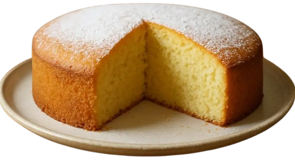
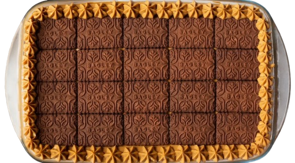
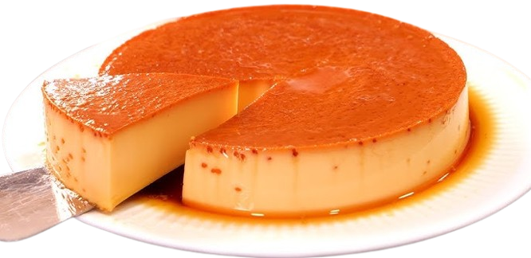

RECETA 1

Pasos:
- Batí 3 huevos con 1 taza de azúcar hasta que esté claro y espumoso.
- Sumá 1/2 taza de leche, 1/4 taza de aceite y esencia de vainilla. Mezclá bien.
- Agregá 2 tazas de harina leudante (o harina + polvo de hornear) de a poco, mezclando suave.
- Poné la mezcla en un molde enmantecado y llevá al horno a 180°C por 30/40 minutos.
RECETA 2

- Mezclá dulce de leche con queso crema hasta que quede suave.
- Pasá las chocolinas por leche (rápido, sin que se desarmen).
- En una fuente: agregas una capa de galletitas + capa de la mezcla, y repetís.
- Llevá a la heladera mínimo 4 horas (mejor de un día para el otro).
RECETA 3

- Derretí 1 taza de azúcar en una olla hasta que quede dorado y volcá en el molde.
- Batí 4 huevos con 1 lata de leche condensada, 1 taza de leche y esencia de vainilla.
- Poné la mezcla en el molde acaramelado y llevalo a horno a 180 °C a baño María.
- Horneá 45/60 min, dejá enfriar y desmoldá.